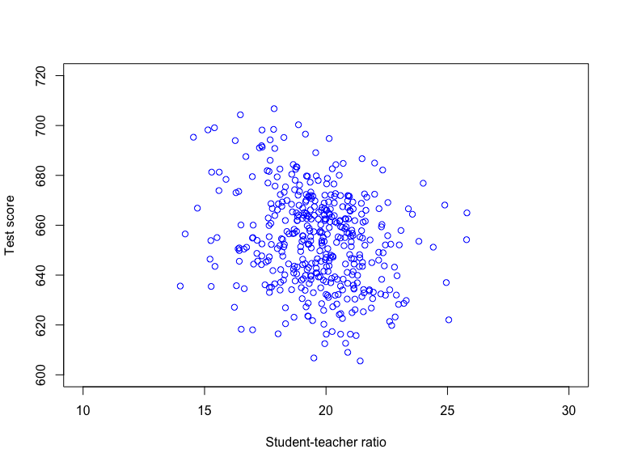
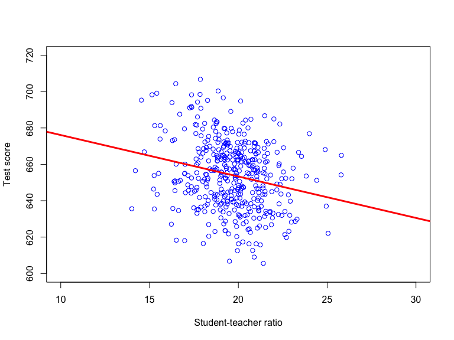

Based on Stock and Watson, ch. 4

\[Score_i = \beta_0 + \beta_1 STR_i + u_i; \quad i = 1,\ldots,n\]
# Estimate b0,b1 in Score = b0 + b1 STR + u by OLS;
# then assign output to lm1
lm1 <- lm(Score ~ STR, data = CASchools)
lm1 # Print output to console##
## Call:
## lm(formula = Score ~ STR, data = CASchools)
##
## Coefficients:
## (Intercept) STR
## 698.93 -2.28\[Score_i = \underset{\hat{Score}_i}{\underbrace{698.93 -2.28 STR_i}} + \hat{u}_i; \quad i = 1,\ldots,n\] 
# Scatter plot of Score against STR
plot(CASchools$STR,CASchools$Score,
col = "blue", # Color of data points
xlab = "Student-teacher ratio", # Label on x-axis
ylab = "Test score", # Label on y-axis
xlim = c(10, 30), # Range of x-axis (from 10 to 30)
ylim = c(600, 720)) # Range of y-axis (from 600 to 720)
# Add sample regression function to the plot
abline(lm1,
col = "red", # Make the line red
lwd = 3) # Set linewidth to 3\[Score_i = \hat{Score}_i + \hat{u}_i; \quad i = 1,\ldots,n\]
Explained variance: variation in \(\hat{Score}_i\)
Residual variance: variation in \(\hat{u}_i\)
\(\hat{Score}_i\) and \(\hat{u}_i\) are uncorrelated by virtue of OLS.
\[TSS = \sum_{i=1}^n \left(Score_i - \overline{Score}\right)^2\] \[ESS = \sum_{i=1}^n \left(\hat{Score}_i - \overline{Score}\right)^2\] \[RSS = \sum_{i=1}^n \left(Score_i - \hat{Score}_i\right)^2 = \sum_{i=1}^n \hat{u}^2_i\]
\[TSS = ESS + RSS\]
The standard error of the regression (\(SER\)) is an estimator of the standard deviation of the error term \(u\)
The \(SER\), often denoted \(s_{\hat{u}}\), is constructed from the regression residuals \((\hat{u}_i;i=1,\ldots,n)\):
\[s_{\hat{u}} = \sqrt{\frac{1}{n-2}\sum_{i=1}^n \hat{u}_i^2} = \sqrt{\frac{RSS}{n-2}}\]
##
## Call:
## lm(formula = Score ~ STR, data = CASchools)
##
## Residuals:
## Min 1Q Median 3Q Max
## -47.727 -14.251 0.483 12.822 48.540
##
## Coefficients:
## Estimate Std. Error t value Pr(>|t|)
## (Intercept) 698.9329 9.4675 73.825 < 2e-16 ***
## STR -2.2798 0.4798 -4.751 2.78e-06 ***
## ---
## Signif. codes: 0 '***' 0.001 '**' 0.01 '*' 0.05 '.' 0.1 ' ' 1
##
## Residual standard error: 18.58 on 418 degrees of freedom
## Multiple R-squared: 0.05124, Adjusted R-squared: 0.04897
## F-statistic: 22.58 on 1 and 418 DF, p-value: 2.783e-06The \(R^2\) is the ratio of ESS to TSS:
\[R^2 = \frac{ESS}{TSS} = 1 - \frac{RSS}{TSS}\]
\(R^2 \in [0,1]\); higher values indicate better in-sample fit
The \(R^2\) is the share of variation in \(Score_i\) that is “explained” by variation in \(STR_i\).
##
## Call:
## lm(formula = Score ~ STR, data = CASchools)
##
## Residuals:
## Min 1Q Median 3Q Max
## -47.727 -14.251 0.483 12.822 48.540
##
## Coefficients:
## Estimate Std. Error t value Pr(>|t|)
## (Intercept) 698.9329 9.4675 73.825 < 2e-16 ***
## STR -2.2798 0.4798 -4.751 2.78e-06 ***
## ---
## Signif. codes: 0 '***' 0.001 '**' 0.01 '*' 0.05 '.' 0.1 ' ' 1
##
## Residual standard error: 18.58 on 418 degrees of freedom
## Multiple R-squared: 0.05124, Adjusted R-squared: 0.04897
## F-statistic: 22.58 on 1 and 418 DF, p-value: 2.783e-06\(SER\) and \(R^2\) measures how close the dependent variable is to (in-sample) predictions from the estimated model
The \(R^2\) is the share of variation in the dependent variable that is “explained” by the regressor
The \(SER\) is an estimator of the standard deviation of the error term \(u\)
The \(SER\) and the \(R^2\) are available in R after estimation via the summary()-function